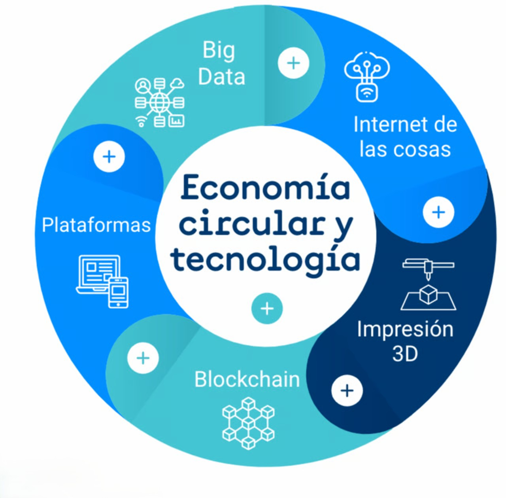

Jon Lecue Tudanca
Trabajador de NexilixIT

Nexelix IT es una empresa de consultoría tecnológica, inteligencia artificial y big data ubicada en Santander (Cantabria). Como Agente Digitalizador del programa Kit Digital, ayuda a pymes a avanzar en su transformación digital de forma sostenible. Fundada en 2019, promueve la Economía Circular en el sector TIC, impulsando el uso responsable de la tecnología y la eficiencia mediante soluciones como la nube y la virtualización.